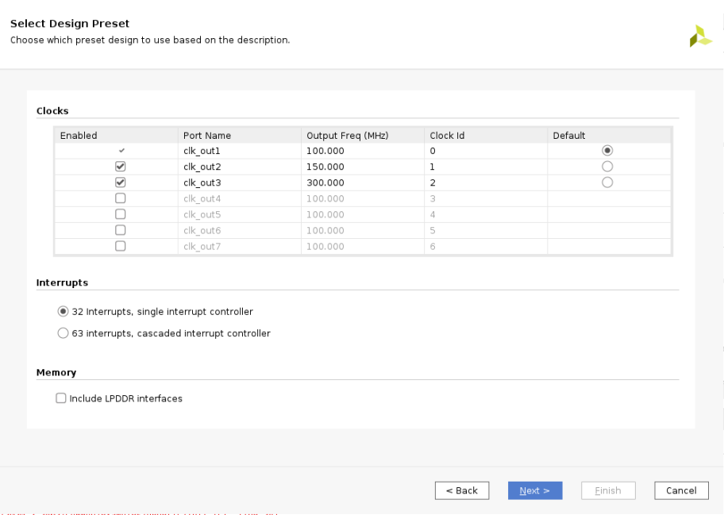
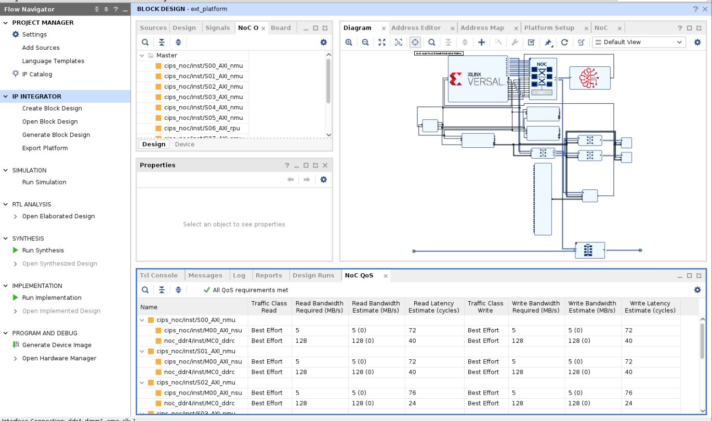
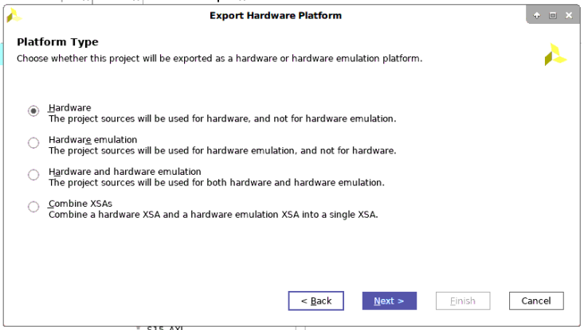
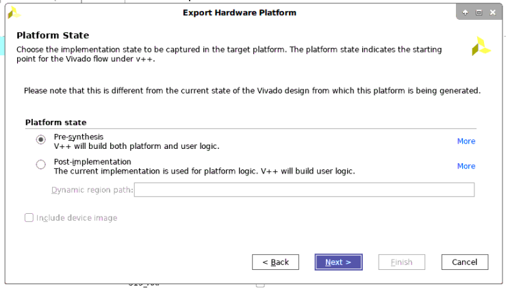
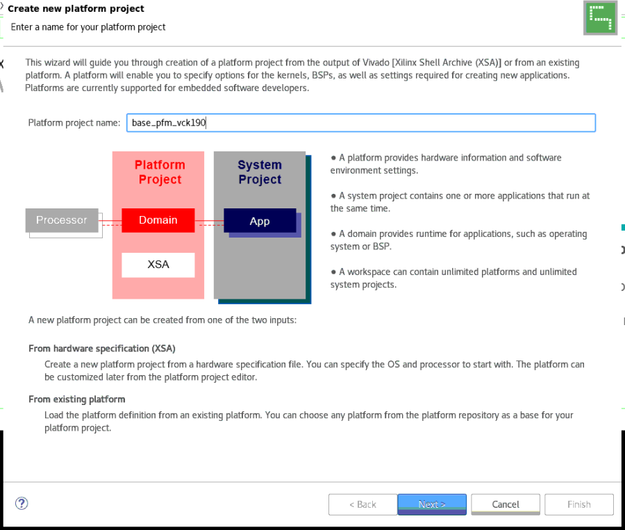
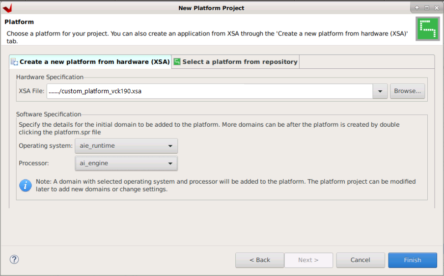
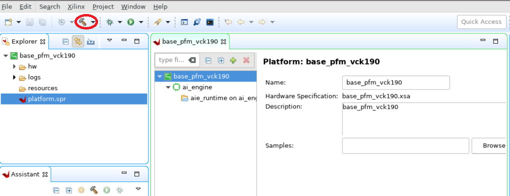

A platform is the starting point of your design and will be used to build Vitis™ software platform applications.
In this first section of the tutorial an example of how to create a new platform is shown. This starts with building the hardware system using the AI Engine in the Vivado® Design Suite.
This is in most ways a traditional Vivado design. You are building the platform, that is, the part of the design that you do not want the Vitis tools to configure or modify. This can include completely unrelated logic, any hierarchy you want to have in the design, but there are some rules that you must follow:
Your design must contain an IP integrator block diagram containing the CIPS, NOC, and other infrastructure IP
Your design must have at least one clock that you will expose to Vitis for use with any kernels that it adds
This clock must have an associated proc_sys_reset block.
This tutorial targets the VCK190 ES board (see https://www.xilinx.com/products/boards-and-kits/vck190.html). This board is currently available via early access. If you have already purchased this board, download the necessary files from the lounge and ensure you have the correct licenses installed. If you do not have a board and ES license please contact your Xilinx sales contact.
Launch Vivado 2021.1 IDE and select Open Example Project from the Welcome window. You can also do it by clicking File from the menu and select Project and then Open Example.
Click Next to skip the first page of the wizard. In the template selection page, select the Versal Extensible Embedded Platform template. Click Next.
Name this project as custom_pfm_vck190 and click Next.
In the board selection page, select VCK190 ES1 Evaluation Platform. If you are going to target other platform, you may select others. Click Next.
In the design preset page, make the following changes:

Click Finish to complete the example design creation phase and this will open up the Vivado project with the template design you just created. You can open the block design to view the details of the platform design. By using the pre-built template, you can easily get a validated hardware design of the platform to move on to the next step. In your real design development procedure, you may use this as a baseline design and make further modifications on top of it.

Click Generate Block Design from the Flow Navigator panel on the left and select Global as the synthesis option. Click Generate and wait for the process to complete.
Click File from the menu and select Export Platform.
a. On the first page, select Hardware as the platform type (this tutorial runs on hardware).

b. On the second page select Pre-synthesis.

c. On the third page, add the name of the platform.

d. On the fourth page, set the name of the XSA.

Close the Vivado project after platform export process finishes.
Open the Vitis 2021.1 IDE and select a workspace.
On the Welcome Page, select Create Platform Project or select File → New → Platform Project ….
Set the platform project name to base_pfm_vck190 and click Next.

Use the XSA generated in the previous step and set the Operating System to aie_runtime and the Processor to ai_engine. Click Finish to create the platform project.

Then build the platform by clicking on the hammer icon.

Note: If you modify the XSA file later, first right-click the platform project and select Update Hardware Specification and then rebuild the platform project.
The generated platform can be found in base_pfm_vck190/export.
In this step, you created the platform starting with building the hardware platform in the Vivado Design Suite. Then you built the platform in the Vitis software platform, based on the exported XSA file.
In the next step, you will build an AI Engine application using this platform.
Return to Start of Tutorial — Go to Step 2
Licensed under the Apache License, Version 2.0 (the “License”); you may not use this file except in compliance with the License. You may obtain a copy of the License at
http://www.apache.org/licenses/LICENSE-2.0
Unless required by applicable law or agreed to in writing, software distributed under the License is distributed on an “AS IS” BASIS, WITHOUT WARRANTIES OR CONDITIONS OF ANY KIND, either express or implied. See the License for the specific language governing permissions and limitations under the License.
Copyright© 2020–2021 Xilinx
XD018